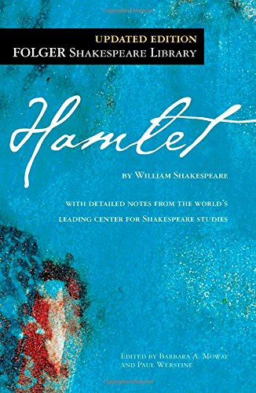

GALLERY
BOOK GALLERY
WAR AND PEACE

LEO TOLSTOY
Epic in scale, War and Peace delineates in graphic detail events leading up to Napoleon's invasion of Russia,
and the impact of the Napoleonic era on Tsarist society, as seen through the eyes of five Russian
aristocratic families.
HAMLET

WILLIAM SHAKESPEARE
The Tragedy of Hamlet, Prince of Denmark, or more simply Hamlet, is a tragedy by William Shakespeare, believed to have been written between 1599 and 1601. The play, set in Denmark, recounts how Prince Hamlet exacts revenge on his uncle Claudius, who has murdered Hamlet's father, the King, and then taken the throne and married Gertrude, Hamlet's mother. The play vividly charts the course of real and feigned madness—from overwhelming grief to seething rage—and explores themes of treachery, revenge, incest, and moral corruption.
THE GRAPES OF WRATH
JOHN STEINBEER
Set during the Great Depression, the novel focuses on a poor family of sharecroppers, the Joads, driven from their home by drought, economic hardship, and changes in the agriculture industry. In a nearly hopeless situation, they set out for California's Salinas Valley along with thousands of other "Okies" in search of land, jobs and dignity.
BELOVED
TONY MORRISON
Beloved is a 1987 novel by American novelist Toni Morrison. Set in the period after the American Civil War, the novel tells the story of a dysfunctional family of formerly enslaved people whose Cincinnati home is haunted by a malevolent spirit.
HEART OF DARKNESS
JOSEPH CONRAD
The story details an incident when Marlow, an Englishman, took a foreign assignment from a Belgian trading company as a ferry-boat captain in Africa
GREAT EXPECTATIONS
CHARLES DICKENS
Great Expectations is written in the genre of "bildungsroman" or the style of book that follows the story of a man or woman in their quest for maturity, usually starting from childhood and ending in the main character's eventual adulthood. Great Expectations is the story of the orphan Pip, writing his life from his early days of childhood until adulthood and trying to be a gentleman along the way. The story can also be considered semi-autobiographical of Dickens, like much of his work, drawing on his experiences of life and people.